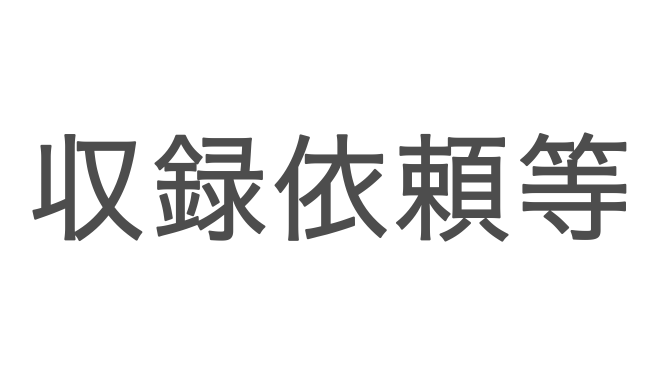

<body bgcolor="ffffff" link="gray" vlink="gray">
<link rel="apple-touch-icon" href="apple-touch-icon180.png" sizes="180x180">


<title>問合せ | 新菊阿辞典 電子版</title>

<a href="https://acs-ed.github.io/avirytionary/問合せ.html"></a><a href="https://translate.google.com/translate?sl=ja&tl=en&u=https://acs-ed.github.io/avirytionary/"></a><a href="https://acs-ed.github.io/acs/3430141214159265358979.html"></a>


	<hr>
	<div style="padding: 0px 15px; background: #ffffff">

	<p><font size="6"><b>問合せ</font></p></b>
<font size="5" face="sans-serif">新語収録の依頼やその他問合せは、avirysanthelogy@outlook.frもしくはkikuagaku@gmail.comでお受けしております。さらなる辞典の発展にご協力お願いいたします。</font>
